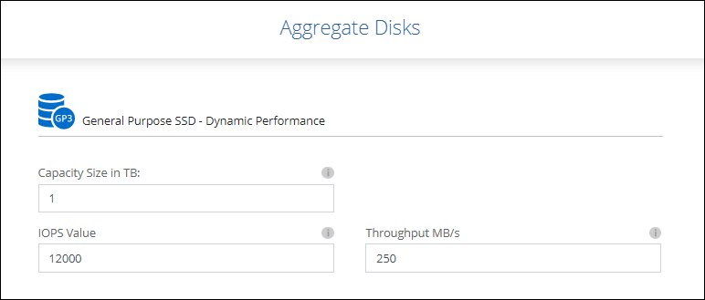

Amazon Web Services
Amazon Web Services
 Google Cloud
Google Cloud
 Microsoft Azure
Microsoft Azure
 要求變更文件
要求變更文件 編輯此頁面
編輯此頁面 瞭解如何作出貢獻
瞭解如何作出貢獻AWS中的彈性Volume
支援Amazon EBS Elastic Volumes功能搭配Cloud Volumes ONTAP 使用支援的不只是一個可提供更好的效能和額外容量、同時Cloud Manager還能視需要自動增加基礎磁碟容量。
效益
-
動態磁碟成長
Cloud Manager可在Cloud Volumes ONTAP 執行過程中動態增加磁碟大小、同時還能連接磁碟。
-
更優異的效能
使用彈性磁碟區啟用的集合體最多可有八個磁碟、在兩個RAID群組中平均使用。此組態可提供更高的處理量和一致的效能。
-
較大的集合體
支援八個磁碟、可提供最多128 TiB的集合體容量。對於未啟用「彈性磁碟區」功能的集合體、這些限制高於六個磁碟限制和96個TiB限制。
請注意、系統總容量限制維持不變。
支援的組態
Amazon EBS彈性磁碟區功能支援特定Cloud Volumes ONTAP 的版本、以及特定的EBS磁碟類型。
版本Cloud Volumes ONTAP
從Cloud Volumes ONTAP 9.11.0版或更新版本建立的_new _支援彈性磁碟區功能。此功能不支援Cloud Volumes ONTAP 在9.11.0之前部署的現有支援功能。
例如、如果您建立Cloud Volumes ONTAP 了一個版本不支援彈性磁碟區功能、之後又將該系統升級至版本9.11.0、則不支援彈性磁碟區功能。必須是使用9.11.0版或更新版本部署的新系統。
EBS磁碟類型
使用通用SSD（GP3）或已配置的IOPS SSD（IO1）時、會在Aggregate層級自動啟用彈性磁碟區功能。使用任何其他磁碟類型的Aggregate不支援彈性磁碟區功能。
必要的AWS權限
從3.9.19版本開始、連接器需要下列權限、才能啟用Cloud Volumes ONTAP 及管理資訊區上的「彈性Volume」功能：
-
EC2：說明體積修改
-
EC2：修改Volume
這些權限包含在中 "NetApp 提供的原則"
彈性磁碟區的支援運作方式
啟用「彈性磁碟區」功能的Aggregate由一或兩個RAID群組組成。每個RAID群組都有四個容量相同的磁碟。以下是10 TiB Aggregate的範例、每個集合體有四個2.5 TiB的磁碟：

Cloud Manager建立Aggregate時、會從一個RAID群組開始。如果需要額外的容量、Cloud Manager會將RAID群組中所有磁碟的容量增加相同的量、以擴充集合體。容量增加至少為256 GiB或集合體大小的10%。
例如、如果您有1個TiB Aggregate、則每個磁碟為250 GiB。集合體容量的10%為100 GiB。這低於256 GiB、因此集合體的大小會增加至少256 GiB（每個磁碟64 GiB）。
Cloud Manager可在Cloud Volumes ONTAP 執行不同步系統的情況下、在磁碟仍連接的情況下、增加磁碟的大小。變更不中斷營運。
如果某個Aggregate達到64 TiB（或每個磁碟上有16 TiB）、Cloud Manager會建立第二個RAID群組來增加容量。第二個RAID群組的運作方式與第一個相同：它有四個磁碟具有完全相同的容量、最多可擴充至64 TiB。這表示集合體的最大容量可達128 TiB。
以下是兩個RAID群組的集合體範例。第一個RAID群組已達到容量上限、第二個RAID群組中的磁碟則有足夠的可用空間。

建立Volume時會發生什麼事
如果您建立的磁碟區使用GP3或IO1磁碟、Cloud Manager會在集合上建立磁碟區、如下所示：
-
如果現有GP3或IO1 Aggregate已啟用彈性磁碟區、Cloud Manager會在該Aggregate上建立磁碟區。
-
如果有多個已啟用彈性磁碟區的GP3或IO1集合體、Cloud Manager會在需要最少資源量的集合體上建立磁碟區。
-
如果系統只有GP3或IO1 Aggregate未啟用彈性磁碟區、則會在該Aggregate上建立磁碟區。

雖然這種情況不太可能發生、但可能發生兩種情況：
-
從API建立Aggregate時、您明確停用了彈性磁碟區功能。
-
您Cloud Volumes ONTAP 從使用者介面建立了一個新的功能區、在這種情況下、彈性磁碟區功能會在初始Aggregate上停用。檢閱 [Limitations] 請參閱下方以瞭解更多資訊。
-
-
如果現有的Aggregate沒有足夠的容量、Cloud Manager會在啟用彈性磁碟區的情況下建立Aggregate、然後在新的Aggregate上建立磁碟區。
Aggregate的大小取決於所要求的磁碟區大小加上額外10%的容量。
容量管理模式
連接器的容量管理模式可與彈性磁碟區搭配運作、類似於它與其他類型的集合體搭配運作的方式：
-
啟用自動模式（這是預設設定）時、Cloud Manager會在需要額外容量時自動增加集合體的大小。
-
如果您將容量管理模式變更為手動、Cloud Manager會要求您核准購買額外容量。
限制
-
增加Aggregate的大小最多需要6小時。在此期間、Cloud Manager無法為該Aggregate要求任何額外容量。
-
目前Cloud Volumes ONTAP 、只有API支援在初始Aggregate上啟用彈性Volume來建立新的支援功能。Cloud Manager使用者介面不支援此動作。如果Cloud Volumes ONTAP 您從使用者介面建立新的版本的更新版本、則初始Aggregate上不會啟用彈性磁碟區。
使用者介面支援所有其他動作（例如建立新的Aggregate）。
如何使用彈性磁碟區
您可以在Cloud Manager中使用Elastic Volumes、如下所示：
-
在初始Aggregate上建立啟用彈性磁碟區的新系統
如中所述 [Limitations]，此時僅API支援此動作。使用者介面不支援此功能。
當您初始化API呼叫時、預設會在初始Aggregate上啟用「彈性磁碟區」功能。
-
在已啟用「彈性磁碟區」的集合體上建立新的磁碟區
如果您建立的磁碟區使用GP3或IO1磁碟、Cloud Manager會自動在已啟用彈性磁碟區的集合體上建立磁碟區。如需詳細資料、請參閱 [What happens when you create a volume]。
-
建立已啟用彈性磁碟區的新Aggregate
只要Cloud Volumes ONTAP 使用GP3或IO1磁碟的新Aggregate系統是從9.11.0版或更新版本建立、就會在新的Aggregate上自動啟用「彈性Volume」。
建立Aggregate時、Cloud Manager會提示您輸入Aggregate的容量大小。這與您選擇磁碟大小和磁碟數目的其他組態不同。
下列螢幕快照顯示由GP3磁碟組成的新Aggregate範例。

-
識別已啟用彈性磁碟區的集合體
前往「進階配置」頁面時、您可以識別是否已在集合體上啟用「彈性磁碟區」功能。在下列範例中、aggr2已啟用彈性磁碟區、而aggr1則未啟用彈性磁碟區。

-
新增容量至Aggregate
Cloud Manager會自動視需要新增容量以進行集合體、您也可以自行手動增加容量。
-
將資料複寫到已啟用彈性磁碟區的集合體
如果目的地Cloud Volumes ONTAP 支援彈性Volume、則目的地Volume會放置在已啟用彈性Volume的集合體上（只要您選擇GP3或IO1磁碟）。